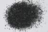

|
|
(For further information on spectroscopy, see:
http://speclab.cr.usgs.gov)
TITLE: Acmite NMNH133746 Pyroxene DESCRIPT
DOCUMENTATION_FORMAT: MINERAL
SAMPLE_ID: NMNH133746
MINERAL_TYPE: Inosilicate
MINERAL: Acmite (Aegirine, Pyroxene group)
FORMULA: NaFeSi2O6
FORMULA_HTML: NaFeSi2O6
COLLECTION_LOCALITY: Kangerdluarssuk, Narssaq (near), Greenland
ORIGINAL_DONOR: Smithsonian
CURRENT_SAMPLE_LOCATION: USGS Reston, VA
ULTIMATE_SAMPLE_LOCATION: USGS Reston, VA
SAMPLE_DESCRIPTION:
This sample was obtained by John W. Salisbury, and the original sample analysis and mid-infrared spectra were published in:
Salisbury, J. W., Walter, L. W., and Vergo, N., 1987, Mid-Infrared (2.1-25µm) Spectra of Minerals: First Edition, U.S. Geological Survey Open File Report 87-263.
"Original sample was large (up to 2cm), very dark green prismatic crystals of acmite intergrown with albite(?). Material was crushed and hand picked by J. Salisbury for grinding."
Sieve interval is: 74-250 µm
IMAGE_OF_SAMPLE:

END_SAMPLE_DESCRIPTION.
XRD_ANALYSIS:
The 74-250 µm grains were x-rayed by Norma Vergo. The resulting pattern showed acmite and an unidentified peak of trace proportions at 4.48 Angstroms.
see:
Salisbury, J. W., Walter, L. W., and Vergo, N., 1987, Mid-Infrared (2.1-25µm) Spectra of Minerals: First Edition, U.S. Geological Survey Open File Report 87-263.
END_XRD_ANALYSIS.
COMPOSITIONAL_ANALYSIS_TYPE: EM(WDS) # XRF, EM(WDS), ICP(Trace), WChem
| COMPOSITION KEYWORD |
Oxide ASCII |
Amount | Weight Percent, % |
Oxide html |
|---|---|---|---|---|
| COMPOSITION: | SiO2 | 52.08 | wt% | SiO2 |
| COMPOSITION: | TiO2 | 0.56 | wt% | TiO2 |
| COMPOSITION: | Al2O3 | 0.98 | wt% | Al2O3 |
| COMPOSITION: | FeO | 29.22 | wt% | FeO |
| COMPOSITION: | MnO | 0.24 | wt% | MnO |
| COMPOSITION: | MgO | 0.06 | wt% | MgO |
| COMPOSITION: | CaO | 3.84 | wt% | CaO |
| COMPOSITION: | Na2O | 11.87 | wt% | Na2O |
| COMPOSITION: | K2O | 0.02 | wt% | K2O |
| COMPOSITION: | Total | 98.87 | wt% | |
| COMPOSITION: | O=Cl,F,S | wt% | ||
| COMPOSITION: | New Total | wt% |
COMPOSITION_TRACE: None
COMPOSITION_DISCUSSION:
From: Salisbury, J. W., Walter, L. W., and Vergo, N., 1987, Mid-Infrared (2.1-25µm) Spectra of Minerals: First Edition, U.S. Geological Survey Open File Report 87-263.
Microprobe analysis showed that one grain out of four examined had about 2 wt % more CaO and correspondingly less Na2O. Otherwise, homogeneous, especially within grains. Average of 13 analyses, which indicates close to end member composition.
END_COMPOSITION_DISCUSSION.
MICROSCOPIC_EXAMINATION:
avg. grain size = 265µm
Mostly clean cleavage surfaces of prismatic grains. Trace of quartz or plagioclase. Prismatic grains are length fast, have straight extinction, prismatic habit and yellow-green pleochroism, all consistent with Acmite. G. Swayze
END_MICROSCOPIC_EXAMINATION.
SPECTROSCOPIC_DISCUSSION:
END_SPECTROSCOPIC_DISCUSSION.
SPECTRAL_PURITY: 1a2_3_4_ # 1= 0.2-3, 2= 1.5-6, 3= 6-25, 4= 20-150 microns
| LIB_SPECTRA_HED: | where | Wave Range | Av_Rs_Pwr | Comment |
|---|---|---|---|---|
| LIB_SPECTRA: | splib04a r 16 | 0.2-3.0µm | 200 | g.s.= |
| LIB_SPECTRA: | splib05a r 53 | 0.2-3.0µm | 200 | g.s.= |
| LIB_SPECTRA: | splib06a r 77 | g.s.= |
{kind=link}